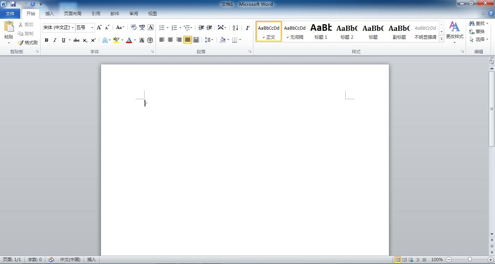
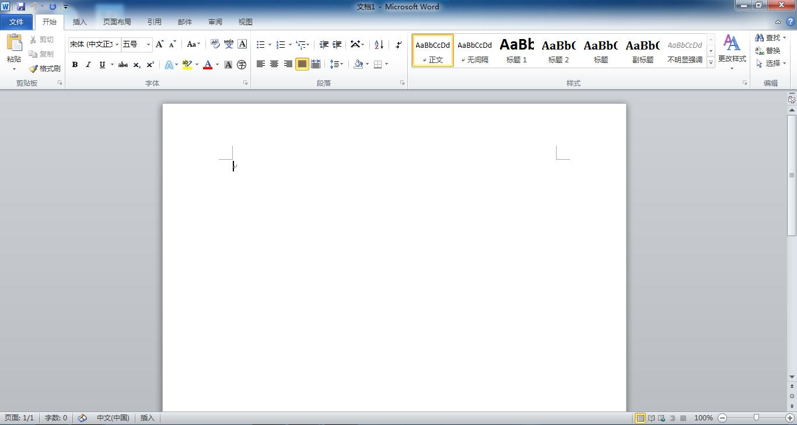

任务一：准备好图片
准备好需要插入到文档中的图片，将图片保存到我的电脑E盘中以自己的姓名命名文件夹
任务二：打开word2010软件
双击桌面word2010软件图标，打开word2010软件
任务三：插入图片
在打开的word文档中，选择插入菜单中的图片，然后在弹出的窗口中选择要插入的图片文件名，选好之后点击插入，图片被插入到文档之中。

准备好需要插入到文档中的图片，将图片保存到我的电脑E盘中以自己的姓名命名文件夹
双击桌面word2010软件图标，打开word2010软件
在打开的word文档中，选择插入菜单中的图片，然后在弹出的窗口中选择要插入的图片文件名，选好之后点击插入，图片被插入到文档之中。